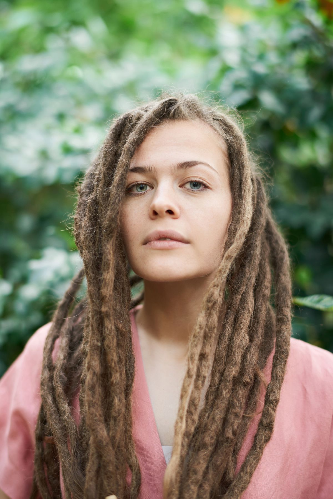

1 Rule, 4 to 6 Weeks, $25 Holds Your Chair: How Often You Retwist Locs, and When to Wait
Your roots are puffy. Your friend says retwist every two weeks. Your cousin says every two months. Who is right? Your locs have a clock, but it is not only the calendar. This post teaches the one rule most stylists use, why twisting too often can thin your roots, why waiting too long makes the next visit harder, and how to read your own new growth to know when it is time.
For most locs, book a retwist about every 4 to 6 weeks. Starter locs often sit at the 4-week end while they learn to hold. Retwisting much more often can thin your roots over time. Waiting far longer lets new growth mat and marry between locs, which makes the next visit longer and harder. The real clock is your new growth and how your locs behave. The $25 deposit holds your chair and goes in full toward your total.
What the video shows: The video shows a retwist done the right way, step by step. You see the locs washed and clean first, then the new growth at each root worked back into the loc, one loc at a time, with the parts kept clean and clear. Watch the roots before and after: before, soft loose growth puffs out at the base; after, each loc stands neat from a tidy root, with no pulling and no pain faces. The video also talks through care between visits, which is the part most people skip. A retwist is not just the twist. It is the clean start, the careful hands, and the rest your roots get between visits.
What is a retwist, in plain words?
A retwist is care for the new growth at your roots. Your hair keeps growing out of your scalp, about a small bit each month. That new hair is loose. It has not yet joined the loc. In a retwist, your stylist washes your locs, then twists or palm-rolls that loose growth so it wraps into the base of each loc, in the same direction the loc was made. Palm-rolling means rolling the loc between the palms to help it keep its shape.
The loc itself, the long part, does not need the twist. The root does. So a retwist is root work: an inch or so of new growth, guided home.
Think of it like weeding a garden row. The plants are your locs. The weeds are the loose hairs that creep between rows and tangle plant to plant. A retwist is the weeding: it clears the rows and puts each hair back in its own line. Weed on a rhythm and the garden stays clean with light work. Skip it for months and the rows are lost in the tangle.
Why is 4 to 6 weeks the rule for most locs?
Because that window matches how hair grows and how roots rest.
In about 4 weeks, you have enough new growth to work with: the stylist can see it, hold it, and guide it. Much sooner than that, there is barely any growth to twist, so the visit twists the same base again for almost no gain.
By about 6 weeks, the growth is still easy to separate and guide. Past that, the loose hairs at the base start to wander. They reach for the loc next door. That is where trouble begins.
So the rule is a balance: long enough for real growth and root rest, short enough that the growth is still tame. Four to six weeks is where most heads find that balance. Starter locs, which are young and still learning to hold their shape, often do best at the 4-week end. Mature locs, years in and firm, often sit fine at 5 or 6.
What happens if you retwist too often?
Each retwist twists the same base of hair tight. Do that again and again with no rest, and the base can thin over time. The root is the loc's anchor. A thin anchor holds less weight, and the loc hangs by fewer hairs.
Think of it like bending a wire back and forth in the same spot. Bend it once in a while and it holds. Bend it every day and the spot gets weak and snaps. Your roots are kinder than wire, but the lesson stands: the same spot, worked too often, grows weak.
Here are the signs you are twisting too soon:
- Your roots still look neat, with no puff of loose growth.
- Your scalp feels sore or tender for days after each visit.
- The bases of your locs look thinner than the locs below them.
- You are booking out of habit, not because you can see growth.
If you see these, stretch the gap. Your locs will not unravel because you waited two more weeks. They will thank you with thicker roots.

What happens if you wait too long?
Loose new growth does not sit still. Given months, it mats: the hairs felt together into a flat web at the base. And locs marry: two locs grow into one joined base, like vines that twine around each other.
Fixing that is slow, careful work. Your stylist must separate the web hair by hair and split married bases back into single locs, without tearing. The visit runs longer, costs more of your day, and pulls more. A client who comes at week 6 gets a smooth visit. A client who comes at week 16 gets a rescue.
The signs you waited too long:
- You cannot see your parts anymore.
- Locs stick to their neighbors when you lift one.
- A flat, fuzzy mat covers the scalp between locs.
- Wash day leaves your roots feeling heavy and tangled.
One late visit is not a disaster. Your stylist can fix it. But a habit of late visits keeps your locs in rescue mode, and rescue mode is hard on roots too.
What happens at a retwist visit, step by step?
Knowing the shape of the visit helps you judge it. A good retwist visit runs like this:
First, the wash. Your locs and scalp are washed clean. A retwist on a dirty scalp traps grime at the roots, so the wash is not extra. It is step one.
Second, the check. Your stylist looks at your bases: which roots are thin, which locs are marrying, where growth is heavy. This is where a good stylist adjusts the plan for your head, not a script.
Third, the separation. Married or webbed growth is parted back into single locs, gently, before any twisting starts.
Fourth, the retwist itself. New growth is twisted or palm-rolled into each base, loc by loc, part by part, in the loc's own direction.
Fifth, the finish. Your locs may be styled, and they are dried so you do not leave with wet roots sitting against your scalp for hours.
If a visit skips the wash or rushes the check, say something. You are not being hard. You are guarding your roots, and your roots are the whole future of your set. A stylist who welcomes the question is a stylist who does the steps.
Can you wash your locs between retwists?
Yes. Please do. Washing and retwisting are two different kinds of care. A wash cleans the scalp and the locs. A retwist guides new growth. Your locs can be washed whenever they need it between visits, and clean locs lock and grow well.
Many new loc wearers fear that water will undo their locs, so they skip washes and come in with dirty, itchy scalps. That fear is backwards for most heads. Ask your stylist how to wash your set at your stage, and with what. Then wash on your own rhythm and retwist on the 4-to-6 rhythm. Two clocks, two jobs.
Checklist:
- Book your retwist about every 4 to 6 weeks, 4 for starter locs
- Look for a puff of new growth before you book, not just a date
- Stretch the gap if roots look thin or your scalp stays sore
- Come sooner if your parts vanish or locs start to marry
- Keep washing between visits; a wash is not a retwist
- Put the $25 deposit down to hold your chair
How do you book the rhythm at KuuStore?
KuuStore serves clients across Miami-Dade, Broward, and Palm Beach, and clients come to the salon for their visits. The easy way to keep a 4-to-6-week rhythm is to book the next visit before you leave the current one. Count it out: if today is week 0, your next chair day lands 4 to 6 weeks out. Put it on your calendar before the week fills up.
A $25 deposit holds your chair for that visit, and it applies in full toward your total on the day. The address for your visit is given when your appointment is booked.
If life moves the date, move it by a week, not a month. The rule bends a little without breaking. What breaks it is the silent drift from 6 weeks to 12.
What are the honest limits of the rule?
The 4-to-6-week rule is a rule for most locs, not a law for every head. Hair grows at different speeds. Fine hair and thick hair behave in different ways. Very active lives, swim habits, and jobs that need a neat look can all shift the best gap. Microlocs and other small sets often run on their own rhythm and method, set by the stylist who made them.
So use the rule as your starting line, and your roots as the judge. Your stylist, looking at your base with trained eyes, has the final word for your head. If your stylist says your roots need 8 weeks, believe them over any post, this one too.
You can learn to read your own roots between visits. Stand at a mirror with good light once a week. Lift one loc and look at its base. Can you see a soft puff of loose growth? Can you still see the part lines on your scalp? Can you slide a finger between two locs without them pulling each other? Neat base, clear parts, free locs: you can wait. Lost parts, webbing, locs that lift as a group: your clock is ringing. Two minutes at the mirror, once a week, and you will never be shocked at the chair again.
Your free tool for this step
Your free tool for this step is the Appointment Reminder Planner, free at https://kuustore.life/appointment-reminder-planner.html. You set your visit rhythm, and it helps you plan your reminders so the next chair day never sneaks past you.
Use it like this:
- Open the planner right after a retwist, while the date is fresh.
- Count forward 4 to 6 weeks and pick your next visit day.
- Set your reminders for that day, with a few days of warning.
- When the reminder lands, check your roots against the signs in this post.
- Book the chair and put the $25 deposit down to hold it.
What it does not do: it does not book the chair by itself, and it cannot see your roots. The planner guards your calendar. Your eyes, and your stylist's hands, guard your locs.
The bottom line
One rule: retwist about every 4 to 6 weeks, with starter locs near 4. Too often thins the roots that anchor your locs. Too long lets growth mat and locs marry, and turns a smooth visit into a rescue. Read your new growth, wash between visits, and book the next chair before you leave the last one. The $25 deposit holds that chair and counts in full toward your total. Steady rhythm, healthy roots: that is the whole secret, and it is not a secret at all.